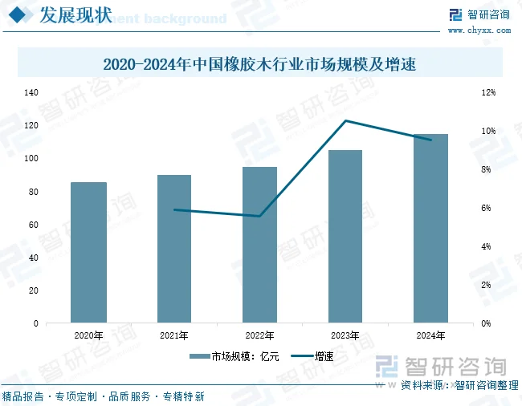

橡胶木加工是海南橡胶全部业务板块中毛利率最高的板块——2024 年合并报表披露毛利率 16.50%，远超贸易（~2.7%）、初加工（~2%）、种植（~3%）。但收入仅 2.42 亿元，占总营收 0.50%。本文深度拆解橡胶木业务的商业模式、真实盈利能力、改革历程、行业环境、原料供给机制，以及其在高毛利与低净利之间的矛盾根源。
先看一下业务模式
橡胶树生命周期：
种植 → 7-8 年后开割 → 采胶 25 年 → 产量下降 → 砍伐更新
↓
橡胶木进入加工环节
↓
┌──────────────────┼──────────────────┐
↓ ↓ ↓
原木直销 锯材/刨光材 高分子改性材
（基地分公司） （宝橡林产加工） （高附加值产品）
↓ ↓ ↓
低毛利/高周转 中毛利/稳定 高毛利/小众市场
| 产品类别 | 说明 | 毛利率层级 |
|---|---|---|
| 橡胶木原木 | 直接出售未加工木材（各基地分公司自行销售） | 极高（树木已折旧，成本近乎为零） |
| 家具刨光材 | 供应家具厂的标准板材 | 中低（行业竞争激烈） |
| 指接拼板 | 小料拼接成大幅面板材 | 中 |
| 装饰材/地板料 | 地板、楼梯部件用材 | 中 |
| 高分子改性材 | 高温热改性、防腐处理后的高性能木材 | 较高（有技术壁垒） |
| FSC 认证材 | 全链条可追溯的"零添加"环保木材 | 溢价 10-30%（欧美市场需求） |
这里可以直接进行两大分类，即橡胶原木销售和原木加工，24年他们的数据如下：
| 业务 | 收入 | 成本 | 毛利润 | 毛利率 |
|---|---|---|---|---|
| 橡胶木加工 | 2.5158亿元 | 2.5351亿元 | -193万元 | -0.77% |
| 原木销售 | 0.8810亿元 | 0.4613亿元 | 4197万元 | 47.63% |
| 合计 | 3.3969亿元 | 2.9964亿元 | 4004万元 | 11.79% |
可以发现橡胶木加工基本上不赚钱。赚钱高毛利的是原木销售，毛利率接近50%，两者业务占比：
之前分析财报的时候的橡胶木业务的毛利率16%是将上面这两者综合下来，最后计算出的。
这边目前已知的是橡胶原木销售是高毛利赚钱的，那么还需要看一下行业趋势，也就是国内橡胶木市场的发展趋势是如何的，未来要么有利于橡胶木。

这个是相关的链接国内橡胶木市场从2021年到2025年持续增长，国内家具市场中的橡胶家具占比接近20%，说明这块还是大有可为，行业趋势没问题。
这边橡胶木加工占橡胶木业务的75%（3/4），橡胶原木销售占25%（1/4）
接下来按两类情况对橡胶木业利润进行估算：
| 指标 | 数据 |
|---|---|
| 海南橡胶胶园总面积 | ~360 万亩（上限400万亩） |
| 橡胶树开割年限 | 7-8 年开割 → 采胶 25 年 → 更新砍伐 |
| 年更新采伐比例 | 约 3%（公司官方口径） |
| 年更新面积 | 约 8-10 万亩/年 |
| 2024 年实际采伐面积 | 7.65 万亩（改革后提速 114%） |
| 2025 年计划更新种植 | 8 万亩 |
| 老龄残次胶园比例 | 25.23%（更新滞后严重） |
⚠️ 关键认知：橡胶木的原料供给完全受橡胶种植周期的约束。它不是独立的木材生意——原料来源是被动产生的（橡胶树老了必须砍），不能主动扩产。这是橡胶木业务的天然天花板。
| 时期 | 年更新面积 | 木材产量（估算） | 说明 |
|---|---|---|---|
| 2025-2030 | 8-10 万亩/年 | ~12-16 万 m³/年 | 常态化更新 + 台风后加速补种 |
| 2030 年后 | 可能下降 | ~10-15 万 m³/年 | 新种植的树还没到砍伐期（须等 25+ 年） |
接下来来利润计算。
一种情况是：橡胶原木全部进行加工，然后进行售卖，我们来看看利润：
原木经过：
原木 → 去皮 → 锯解 → 烘干 → 剔除 → 刨光 → 指接/拼板 → 成品会有木材损耗。
如果我们采用一个比较合理的综合出材率 55%–65%作为估算区间，那么：
| 原木 | 55%出材率 | 60%出材率 | 65%出材率 |
|---|---|---|---|
| 12万m³ | 6.6万m³ | 7.2万m³ | 7.8万m³ |
| 16万m³ | 8.8万m³ | 9.6万m³ | 10.4万m³ |
所以：
12–16万m³原木 → 大约6.6–10.4万m³可销售加工材
中性取60%：
约7.2–9.6万m³成品。
2024年橡胶木加工相关收入约 2.516亿元。公司当时木材加工产能约4万m³/年。
如果粗略按照：2.516亿元 ÷ 4万m³
得到：约6,290元/m³销售收入
用这个参数进行计算
| 项目 | 12万m³原木 | 16万m³原木 |
|---|---|---|
| 原木投入 | 12万m³ | 16万m³ |
| 成品出材量 | 7.2万m³ | 9.6万m³ |
| 销售收入 | 4.53亿元 | 6.04亿元 |
| 毛利润 | 0.75亿元 | 1.00亿元 |
| 毛利率 | 16.5% | 16.5% |
也就是说这种情况下，全部加工每年是7000万-1亿的利润。
再来看看橡胶原木直接销售：
国内橡胶原木市场价格：
| 橡胶原木品质 | 估计价格 | 1万m³销售额 |
|---|---|---|
| 普通原木 | 1,200–1,600元/m³ | 1,200–1,600万元 |
| 中等品质 | 1,600–2,000元/m³ | 1,600–2,000万元 |
| 较好原木 | 2,000–2,500元/m³ | 2,000–2,500万元 |
| 优质、规格较好的原木 | 2,500元+/m³ | 2,500万元+ |
接下来计算按普通原木来看海南橡胶卖出12万立方米的原木和16万立方米的原木能赚多少利润（47%的毛利率）
| 原木销售量 | 按1,500元/m³ | 按1,750元/m³ | 按2,000元/m³ |
|---|---|---|---|
| 12万m³ | 毛利8460万 | 毛利9870万 | 毛利1.128亿 |
| 16万m³ | 毛利1.128亿 | 毛利1.316亿 | 毛利1.504亿 |
也就是说这种情况下，全部售卖橡胶木，它的利润是8500万-1.5亿之间。
虽然这部分利润算是小菜，但是持续累计下来也是比不小的财富。